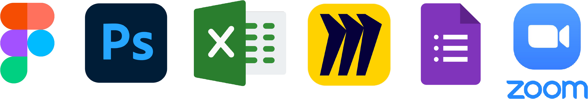
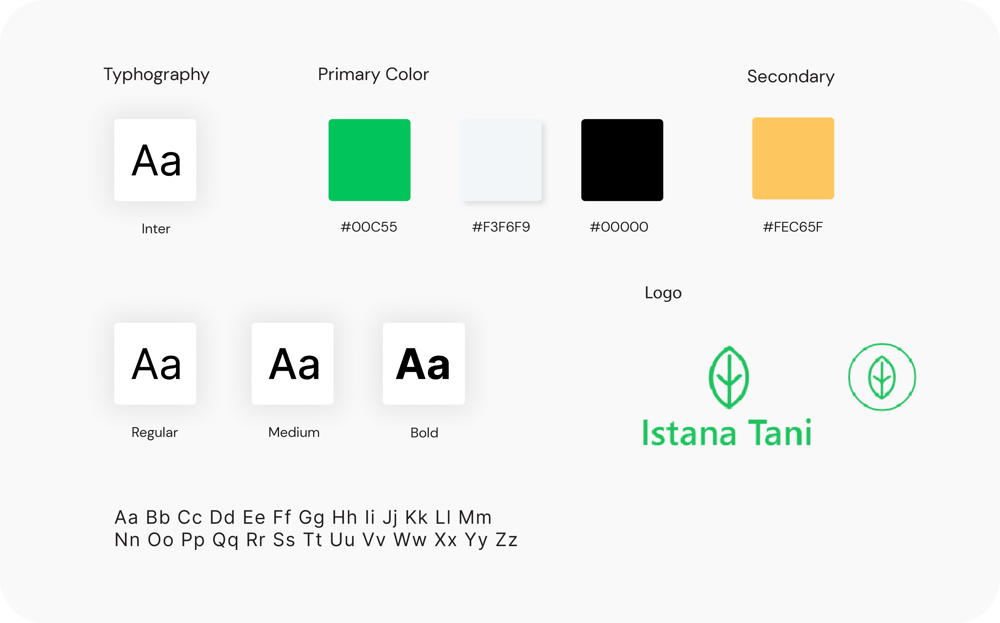
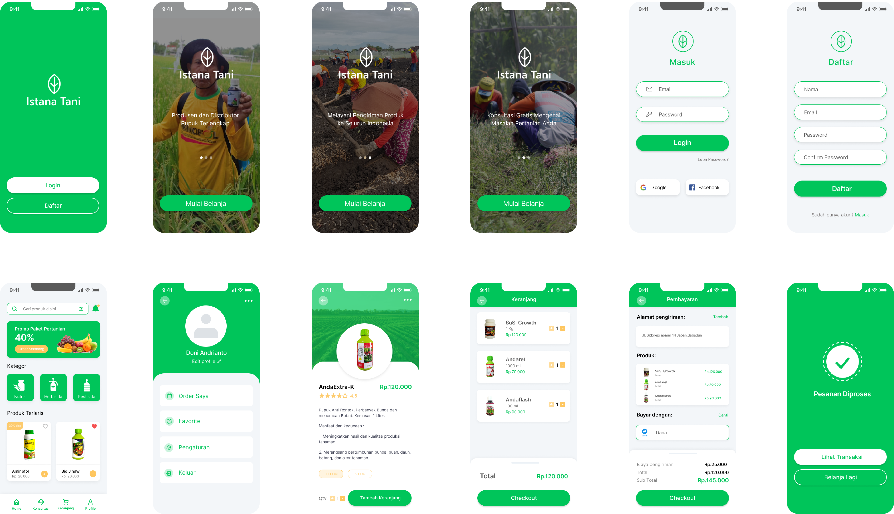

My Role
UI UX Designer | Duration : 3 month
Istana Tani is an application to market products that focus on agriculture products like fertilizers, pestisides, herbicides, plants, insecticides. E-commerce platform for farmers to find the best products that provide domestic shipping and help farmers with free consultation about agricultural products.
UI UX Designer | Duration : 3 month

I found the problem and also the solution contained in the application. So that it can be the main goal that will underlie the making of the application to completion. so that in developing the application to completion it can answer all the main problems and the purpose of making the application
I have been doing competitive research collecting data on multiple apps that have the same functionality. I compare the strengths and weaknesses of each app and use that data to build a better app
I created users persona for the target platform of the app's users. With this persona, it can help to be more structured and focused in the application development process
Then i created empathy map to get more specific data about the user's points, goals, feelings and thoughts
From all the data I get, I can create the information structure needed to create the structure and features of the application
Next, I created a user flow to find out how a user uses the application from the usage flow and features of the application
I started doing low-fidelity sketches with paper and pen. then i moved it in figma by making mid and high fidelity. In the following stages, I translate the user experience process into design
I created a style guide that is useful for all design guides in making applications and to produce a harmonious application design
After completing the high fidelity process. next i made a prototype in figma to know better how the app will look and running
To find any problem that occurs while using the app. I provide usability testing with 4 participants. Participants did application testing by taking several steps to test application features
Goals for testing
Issues
In making this first application, I had many shortcomings and things that needed to be fixed. I received a lot of input from many people which I would appreciate to improve the quality of the applications that I make and produce applications that can solve user problems. I have to learn a lot about the process of making applications, especially in making user interfaces that pay a lot of attention to user comfort when using applications. Because of that I will try to pay attention to user comfort when using, especially in the choice of several design compositions that are very influential in the use of the application